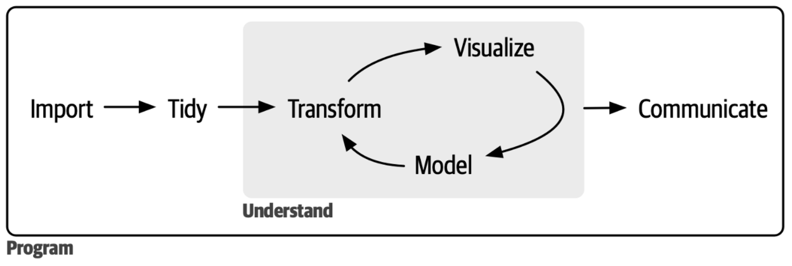
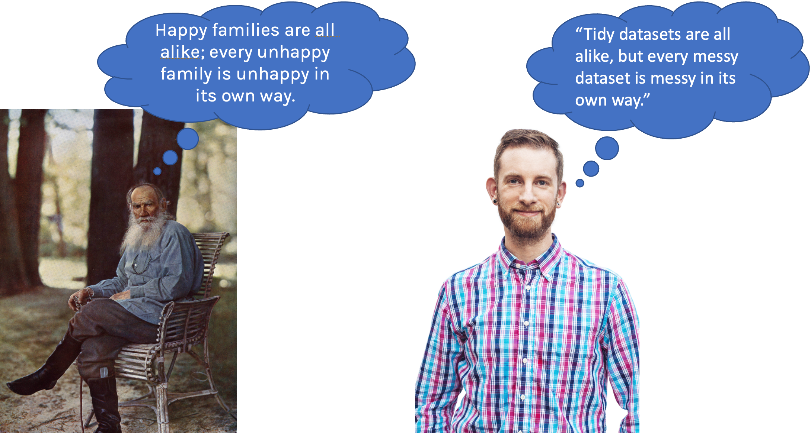
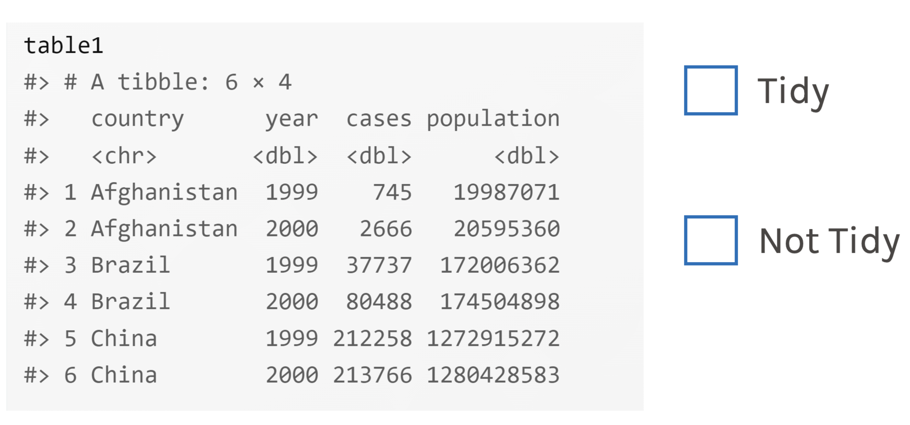
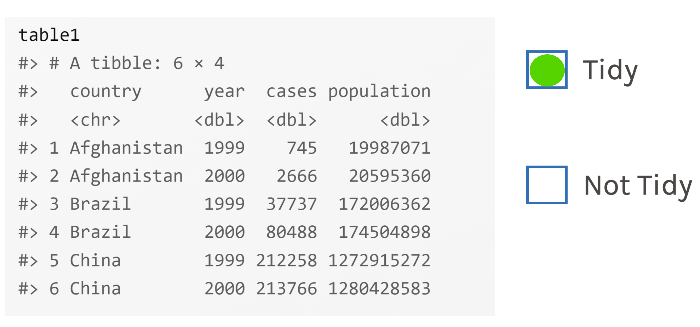
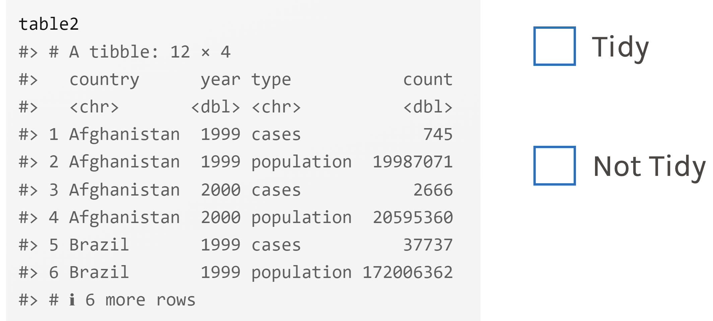
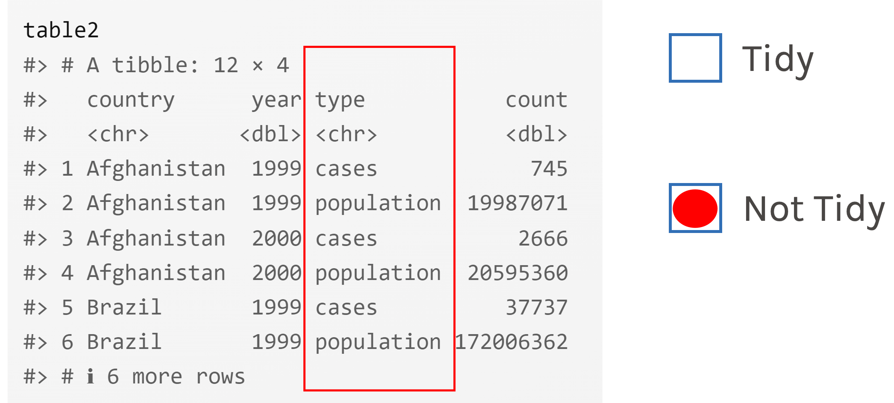
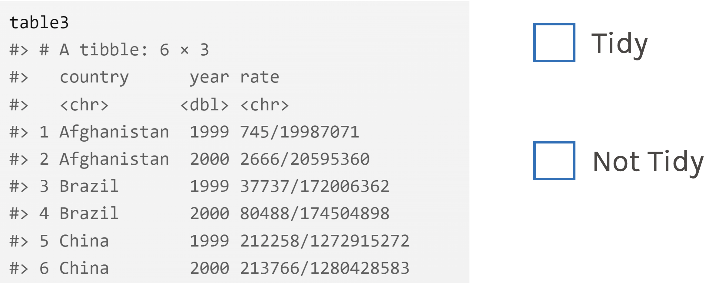
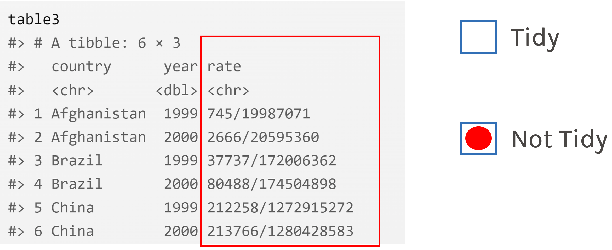

Datentransformation und Modellierung
Grundlagen der Datenanalyse und Statistik mit R | WS 2024/25
Prof. Dr. Daniel Schnitzlein
dplyr-Paket
Das dplyr Paket
Alle Datenmanipulationen und -transformationen die wir in diesem Abschnitt behandeln, können auch in Base R ausgeführt werden.
Allerdings stellt das
tidyversemit demdplyrPaket ein Werkzeug zur Verfügung, das die Arbeit mit Daten und speziell komplexeren Daten deutlich vereinfacht.Wir nutzen
dplyrin diesem Kurs mit Datensätzen, die im DataFrame oder Tibble Format vorliegen.dplyrkann aber auch mit larger-than-memory Datensätzen z.B. auf AWS (arrow) oder Apache Spark (sparklyr) zusammenarbeiten.Ebenso steht mit
dbplyreine Anbindung an SQL zur Verfügung und viaduckplyran DuckDB.

dplyr Cheat-Sheet
Der Datenanalyse Prozess


Struktur des Funktionsaufrufs
Das
erste Argumentist immer ein DataFrame/Tibble, also ein Datensatz.Die weiteren Argumente beschreiben die Spalten die bearbeitet werden sollen (anhand der Variablennamen).
Der Output ist immer ein Tibble, also ein Datensatz.
dplyrnennt die einzelnen Funktionen Verben (basierend auf einer Grammatik).Da jede Funktion eine Sache speziell gut macht, müssen für komplexere Transformationen mehrere Funktionen verbunden werden.
Dafür steht uns der Pipe Operator zur Verfügung. Früher
%>%aus dem Paketmagrittr(verschiedene Entwicklungen seit Mitte 2012, in verschiedenen Paketen), heute|>ausbaseR (seit R Version 4.1 im Mai 2021).Wichtig:
dplyr-Funktionen führen die jeweilige Operation aus, erstellen eine neues Tibble und geben dieses aus. Es werden nie Änderungen an dem Quelldatensatz durchgeführt. Um die Änderungen zu speichern, muss man entweder den alten Datensatz mit dem neuen Datensatz überschreiben, oder ein neues Objekt anlegen. Beides geht mit dem Assignment Operator<-.
Datentransformation
Datengrundlage für die ersten Beispiele sind wieder die palmerpenguins
Datengrundlage für die ersten Beispiele sind wieder die palmerpenguins
Basis dplyr-Funktionen: filter( )
| Funktion | Beschreibung | Beispiel |
|---|---|---|
filter() |
filter( ) wählt Zeilen auf der Basis des Werts einer Variable aus. |
filter(penguins, species=='Gentoo') |
Häufige Fehler:
- Wenn in einer logischen Bedingung für Gleichheit getestet werden soll, muss
==statt=verwendet werden.
- Nicht vollständig ausgeschriebene Bedingungen.
Basis dplyr-Funktionen: arrange( )
| Funktion | Beschreibung | Beispiel |
|---|---|---|
arrange() |
arrange( ) ändert die Reihenfolge der Zeilen auf Basis des Wertes einer Variable. |
|
Basis dplyr-Funktionen: distinct( )
| Funktion | Beschreibung | Beispiel |
|---|---|---|
distinct() |
distinct( ) findet alle eindeutigen Zeilen (eindeutige Kombination von Variablen) in einem Datensatz. |
distinct(penguins, species, island) |
Basis dplyr-Funktionen: count( )
| Funktion | Beschreibung | Beispiel |
|---|---|---|
count() |
count( ) zählt alle eindeutigen Zeilen (eindeutige Kombination von Variablen) in einem Datensatz. |
count(penguins, species, island) |
Basis dplyr-Funktionen: mutate( )
| Funktion | Beschreibung | Beispiel |
|---|---|---|
mutate() |
mutate( ) erstellt neue Variablen (Spalten) die aus den bestehenden berechnet werden. |
mutate(penguins, body_mass_kg=body_mass_g/1000) |
Weitere mutate( ) - Beispiele
Basis dplyr-Funktionen: select( )
| Funktion | Beschreibung | Beispiel |
|---|---|---|
select() |
select( ) erlaubt es einzelne Variablen aus einem DataFrame/Tibble auszuwählen. |
select(penguins, species, body_mass_g) |
select( ) kennt viele Hilfsfunktionen (Auswahl #1)
select( ) kennt viele Hilfsfunktionen (Auswahl #2)
- Mehr Funktionen finden Sie unter
?select.
Basis dplyr-Funktionen: rename( )
| Funktion | Beschreibung | Beispiel |
|---|---|---|
rename() |
rename( ) erlaubt es einzelne Variablen umzubenennen. |
rename(penguins, weight=body_mass_g) |
Basis dplyr-Funktionen: relocate( )
| Funktion | Beschreibung | Beispiel |
|---|---|---|
relocate() |
relocate( ) erlaubt es einzelne Variablen im Datensatz zu verschieben. Ohne Zusatz werden die Variablen nach vorne verschoben. Genauere Steuerung ist mit .before und .after möglich. |
relocate(penguins, species) |
Aufgabe 1
Erstellen Sie die Abbildung 1 aus dem Aufgabenblatt II neu. Dieses mal nur für Adelie Pinguine und messen Sie bitte body_mass_g in kg und bill_length_mm in cm. Achten Sie auf die korrekte Achsenbeschriftung.
Die Entwicklung des pipe-Operators
- Im Januar 2012 gab es erste Diskussionen auf
stackoverflowüber die Entwicklung eines pipe-Operators für R. - Daraus haben sich verschiedene Lösungen entwickelt u.a. im Paket
magrittrmit folgendem Oprator%>%. Technisch war dasmagrittrPaket nie (oder doch?) Teil des Kern-tidyverse, aber eng mit diesem verbunden und alle Pakete unterstützten diemagrittrPipe. - Ein pipe-Operator ermöglicht es verschiedene Funktionen zu kombinieren und auf das selbe Objekt anzuwenden.
- Wie jede Neuerung wurde die Idee eines pipe-Operator (für R) bzw. einer Befehlspipeline zuerst kontrovers diskutiert, hat sich dann aber als sehr nützlich herausgestellt und wurde extrem beliebt (auch außerhalb der
tidyversePakete). - Mit R-Version 4.1.0 (Mai 2021) hat R einen pipe-Operator
|>inbaseR eingeführt, der weitgehend identisch zu dermagrittrVariante funktioniert. - Vorteil: Jetzt können auch Pakete, die sich nicht auf
magrittrberufen, Befehlspipelines nutzen. DiemagrittrVersion kann weiter verwendet werden, für fast alle Anwendungsfälle ist es aber sinnvoller die neue einheitlichebaseVersion zu verwenden. - Anmerkung: Wenn Sie in Foren etc. Lösungen mit
%>%finden, können Sie diese normalerweise weiterhin verwenden und einfach%>%durch|>ersetzen.
Was kann der pipe-Operator
Angenommen, wir möchten aus den Pinguindaten einen neuen Datensatz erstellen, der nur Adeliepinguine mit einem Gewicht von mehr als 3 kg enthält, und wir möchten nur das Gewicht in kg in den Daten haben, das Geschlecht und den Beobachtungszeitpunkt.
Option 1: Zwischenschritte
Was kann der pipe-Operator
Angenommen, wir möchten aus den Pinguindaten einen neuen Datensatz erstellen, der nur Adeliepinguine mit einem Gewicht von mehr als 3 kg enthält, und wir möchten nur das Gewicht in kg in den Daten haben, das Geschlecht und den Beobachtungszeitpunkt.
Option 2: Pipe
Die Pipe in Aktion
- Innerhalb der Pipeline wird der jeweilige Datensatz von links nach rechts weitergegeben.
- Aus diesem Grund ist es nicht notwendig, in den einzelnen Funktionen die Daten zu spezifizieren, da diese aus der Pipeline entnommen werden.
- Ähnlich wie in einem
ggplot( )Aufruf, werden die einzelnen Funktionen auf eigene Zeilen geschrieben. - Achtung: Auch hier gilt, wenn das Ergebnis der Pipeline gespeichert werden soll, muss es einem R-Objekt zugewiesen werden.
Aufgabe 2
Erstellen Sie die Abbildung 1 aus Aufgabe 1 neu und nutzen Sie diesmal den Pipe-Operator.
Basis dplyr-Funktionen: group_by( )
| Funktion | Beschreibung | Beispiel |
|---|---|---|
group_by() |
group_by( ) gruppiert den Datensatz in Untergruppen, die für die Analyse interessant sind. |
group_by(penguins, species) |
Anmerkung: group_by( ) ändert die Daten nicht, aber wenn Sie sich die Ausgabe genau ansehen, werden Sie feststellen, dass die Ausgabe anzeigt, dass die Daten jetzt nach species „gruppiert“ sind. Das bedeutet, dass nachfolgende Vorgänge nun „nach Species“ funktionieren. group_by( ) fügt diese Gruppierungsfunktion dem Datensatz hinzu, wodurch sich das Verhalten der nachfolgenden Funktionen ändert, die auf die Daten angewendet werden.
Basis dplyr-Funktionen: summarize( )
| Funktion | Beschreibung | Beispiel |
|---|---|---|
summarize() |
summarize( ) kann genutzt werden um deskriptive Statistiken auf (gruppierten) Daten zu berechnen. |
summarize(penguins, avg_bill_length = mean(bill_length_mm, na.rm=TRUE)) |
Basis dplyr-Funktionen: summarize( )
Anmerkung: Es kann natürlich auch anhand mehrerer Variablen gruppiert werden.
Soll in einem Datensatz die Gruppierung entfernt werden, kann man das via
ungroup( )erreichen.
Basis dplyr-Funktionen: summarize( )
- Seit
dplyrVersion 1.1.0 (Februar 2023) kann das gleiche Ergebnis mit dem.byArgument auf einer “je-Befehls” Basis erreicht werden. Der Vorteil hier liegt darin, dass man im weiteren Verlauf nicht “vergessen” kann, dass man den Datensatz gruppiert hat.
Tidy Data
Tidyverse-Datenphilosophie
Was ist jetzt tidy data?
Es gibt drei miteinander zusammenhängende Regeln, die einen Datensatz zu tidy data machen:
Jede Variable ist eine Spalte; jede Spalte ist eine Variable.
Jede Beobachtung ist eine Zeile; jede Zeile ist eine Beobachtung.
Jeder Wert ist eine Zelle; jede Zelle ist ein einzelner Wert.
Tidy oder nicht tidy?


Tidy oder nicht tidy?


Tidy oder nicht tidy?


Statistische Modellierung
Einfaches lineares Regressionsmodell (Wdh.)
Die lineare Regression zielt darauf ab, eine lineare Beziehung zwischen einer abhängigen Variable und einer unabhängigen Variablen zu beschreiben, unter der Annahme, dass in der Population eine lineare Beziehung zwischen den Variablen \(y\) und \(x_1\) besteht, die wie folgt spezifiziert werden kann:
\[ y_i = \alpha + \beta_1 x_{1,i} + u_i \]
\(y_i\) wird dabei als abhängige Variable bezeichnet, \(\alpha\) und \(\beta_1\) sind Regressionsparameter, \(u_i\) ist der Störterm und \(x_1\) ist die unabhängige Variable.
Da die Parameter des obigen Modells nicht bekannt sind und nicht beobachtet werden können, müssen diese (auf Basis einer Stichprobe) geschätzt werden.
Das OLS- oder KQ-Verfahren ist dabei das gängigste Verfahren.
Die Parameter werden dabei so gewählt, dass die Summe der quadrierten Residuen minimiert wird.
Einfaches lineares Regressionsmodell (grafische Illustration)
Lineares Regressionsmodell lm( )
- Die
lm( )- Funktion ausbaseR (genauer stats aus base R) ist die wichtigste (nicht die einzige) Funktion um lineare Regressionsmodelle zu schätzen. Die Funktionssyntax lautetlm(formula = y ~ x1 + x2, data=DataFrame)oder kurzlm(y ~ x1 + x2, data=DataFrame). - Anwendung auf die Pinguindaten: \(body\_mass\_g_i = \alpha + \beta_1 flipper\_length\_mm_i + u_i\)
um detaillierte Regressionsergebnisse zu erhalten, kann man die summary()-Funktion nutzen.
Grafisch
lm( ) und in der Pipe
Die lm( )-Funktion kann ohne Probleme in einer Pipe verwendet werden. Hier muss jedoch beachtet werden, dass die erste Stelle in der Funktion die Formel und nicht der Datensatz ist. Dieses Problem kann man umgehen, indem man das Formelobjekt explizit als solches bezeichnet. R setzt dann den Datensatz automatisch an die nächste Stelle im Funktionsaufruf und das ist dann der korrekte Platz.
Interpretation der Ergebnisse
Interpretation: Ein zusätzlicher mm Flossenlänge ist im Durchschnitt, bei sonst gleichen Bedingungen, mit einem um 49.69g höheren Gewicht verbunden.
Multivariates lineares Regressionsmodell
Die lm( )-Funktion kann ohne Probleme Modelle mit vielen erklärenden Variablen verarbeiten.
Multivariates lineares Regressionsmodell - Kategoriale Variablen
Sind die Variablen (Spalten des DataFrame) korrekt spezifiziert, kann lm( ) auch kategoriale Variablen automatisch verarbeiten.
Multivariates lineares Regressionsmodell - Interaktionseffekte
Sind die Variablen (Spalten des DataFrame) korrekt spezifiziert, kann lm( ) auch Interaktionseffekte automatisch verarbeiten.
Aufgabe 3
Berechnen Sie anhand der Daten folgendes lineares Regressionsmodell, einmal für alle Pinguine zusammen und dann getrennt für alle drei Pinguinarten. Interpretieren Sie Ihre Ergebnisse. Beachten Sie, dass Sie die Variablen \(body\_mass\_kg\), \(flipper\_length\_cm\) und \(bill\_depth\_cm\) erst berechnen müssen.
\[ body\_mass\_kg_i = \alpha + \beta_1 flipper\_length\_cm_i + \beta_2 bill\_depth\_cm_i + \beta_3 sex_i + \beta_4 bill\_depth\_cm_i * sex_i + u_i \]
Weitere Modelle
- R kann natürlich nicht nur lineare Regressionsmodelle berechnen, sondern ist in der Lage (fast) alle existierenden Modellfamilien zu berechnen.
- Es würde jetzt hier den Rahmen sprengen um alle aufzuführen. Am einfachsten ist es, die jeweilige Modellbezeichnung zusammen mit
Rzu googeln. - Die Mehrzahl der Modellfunktionen haben eine ähnliche Syntax wie die
lm( )-Funktion und bestehen aus einem Formelobjekt, dem Aufruf des DataFrame und ggf. weiterer Argumente um Verteilungen etc. zu spezifizieren. - Das gilt sowohl für frequentistische Modellierung als auch für Bayes-Modellierung.
Ausblick:
Im nächsten Termin beschäftigen wir uns damit den Output der Tabellen hübsch (druckreif) zu machen und Tabellen und Abbildungen zu vereinheitlichen.
GitHub-Repo: https://github.com/dschnitzlein/GDSR_3_Part_1/